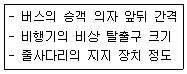
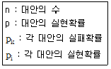
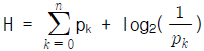
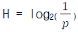
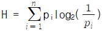
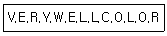
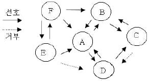

인간공학기사 (2010-03-07 기출문제)
1과목: 인간공학개론
1. 다음 중 [보기]와 같은 사항을 설계하고자 할 때 인체 측정자료에 대하여 적용할 수 있는 설계원리는?

- 최대 집단치에 의한 설계 원리
- 최소 집단치에 의한 설계 원리
- 평균치에 의한 설계 원리
- 가변적 설계 원리
(정답률: 86%)

2. 다음 중 인간공학에 관한 설명으로 가장 적절하지 않은 것은?
- 인간의 특성 및 한계를 고려한다.
- 인간을 기계와 작업에 맞추는 학문이다.
- 인간 활동의 최적화를 연구하는 학문이다.
- 편리성, 안정성, 효율성을 제고하는 학문이다.
(정답률: 88%)
3. 다음 중 인간-기계 시스템의 설계원칙으로 틀린 것은?
- 인체 특성에 적합하여야 한다.
- 계기반이나 제어장치의 중요성, 사용빈도, 사용순서, 기능에 따라 배치가 이루어져야 한다.
- 시스템은 인간의 예상과 양립시켜야 한다.
- 기계의 효율과 같은 경제적 원칙을 우선시한다.
(정답률: 75%)
4. 각각의 변수가 다음과 같을 때 정보량을 구하는 식으로 틀린 것은?

- H = log2n



(정답률: 84%)
5. 다음 중 부품배치의 원칙에 해당하지 않는 것은?
- 기능별 배채의 원칙
- 부품 신뢰성의 원칙
- 사용빈도의 원칙
- 중요성의 원칙
(정답률: 83%)
6. 다음 중 피부의 감각수용 기관의 종류에 해당되지 않는 것은?
- 압력 수용 감각
- 고통 감각
- 온도 변화 감각
- 진동 감각
(정답률: 65%)
7. 다음 중 신호검출이론에서 판정기준(criterion)이 오른쪽으로 이동할 때 나타나는 현상으로 옳은 것은?
- 허위경보(false alarm)가 줄어든다.
- 신호(signal)의 수가 증가한다.
- 소음(noise)의 분포가 커진다.
- 적중 확률(실제 신호를 신호로 판단)이 높아진다.
(정답률: 72%)
8. 다음 중 소리의 차폐효과(masking)에 관한 설명으로 옳은 것은?
- 주파수 별로 같은 소리의 크기를 표시한 개념
- 내이(inner ear)의 달팽이관(Cochlea) 안에 있는 섬모(fiber)가 소리의 주파수에 따라 민감하게 반응하는 현상
- 하나의 소리의 크기가 다른 소리에 비해 몇 배나 크게(또는 작게) 느껴지는 지를 기준으로 소리의 크기를 표시하는 개념
- 하나의 소리가 다른 소리의 판별에 방해를 주는 현상
(정답률: 72%)
9. 다음 중 직렬시스템과 병렬시스템의 특성에 대한 설명으로 옳은 것은?
- 직렬시스템에서 요소의 개수가 증가하면 시스템의 신뢰도도 증가한다.
- 병렬시스템에서 요소의 개수가 증가하면 시스템의 신뢰도는 감소한다.
- 시스템의 높은 신뢰도를 안정적으로 유지하기 위해서는 병렬시스템으로 설계하여야 한다.
- 일반적으로 병렬시스템으로 구성된 시스템은 직렬시스템으로 구성된 시스템보다 비용이 감소한다.
(정답률: 83%)
10. 다음 중 암호 체계 사용상의 일반적 지침으로 적절하지 않은 것은?
- 다차원의 적응성
- 암호의 검출성
- 암호의 표준화
- 암호의 변별성
(정답률: 70%)
11. 반경 10cm 의 조정구를 30° 를 움직일 때 표시장치의 지침이 약 1cm 이동하였다. 이 장치의 조종-반응비율(C/R ratio)은 약 얼마인가?
- 2.56
- 3.12
- 40.5
- 5.23
(정답률: 52%)
12. 다음의 13개의 철자를 외워야 하는 과업이 주어질 때 일반적으로 몇 개의 청크(chunk)를 생성하게 되겠는가?

- 1개
- 2개
- 3개
- 5개
(정답률: 79%)
13. 다음 중 회전 제어장치와 회전 표시장치에서 이동 눈금에 고정 지침이 있는 경우 일반적인 적용원칙으로 적절하지 않은 것은?
- 눈금을 조절 노브와 같은 방향으로 회전시킨다.
- 제어장치와 표시장치는 별도로 구동되도록 한다.
- 눈금수치는 왼쪽에서 오른쪽으로 돌릴 때 증가하도록 한다.
- 증가량을 설정할 때 제어장치를 시계방향으로 돌리도록 한다.
(정답률: 75%)
14. 다음 중 인간공학의 자료분석에서 “통계적 유의성”을 의미하는 것으로 틀린 것은?
- 관찰한 영향이나 방법의 차이가 우연적일 확률이 낮음을 의미한다.
- 종속변수에 대한 영향이 우연적인 것이 아니라면, 그 영향은 독립변수에 의한 것이다.
- 평균치의 차이는 없다.
- 독립변수는 그 종속변수에 대하여 유의적 영향이 있다.
(정답률: 56%)
15. 다음 중 인체치수 측정에 관한 설명으로 옳은 것은?
- 구조적 치수는 활동 중인 신체의 자세를 측정한 치수이다.
- 신체 측정치는 나이, 성, 인종에 따라 다르게 나타난다.
- 기능적 치수는 정적 자세에서 측정한 신체치수이다.
- 동적 상태의 부위 측정은 KS 규격에 따라 마틴(Martin) 인체 측정기를 이용한 직접 측정법을 사용한다.
(정답률: 78%)
16. 인간기억 체계 중 감각보관에 대한 설명으로 틀린 것은?
- 가장 잘 알려진 감각보관 기구는 상보관(iconic storage)과 향보관(echoic storage)이 있다.
- 상보관은 시각적인 잔상이 유지되어 나타난다.
- 향보관은 청각 자극이 수 초 동안 유지되는 것을 말한다.
- 감각보관은 비교적 수동적으로 이루어진다.
(정답률: 68%)
17. 세부적인 내용을 시각적으로 식별할 수 있는 능력을 무엇이라 하는가?
- 시력
- 조절능력
- 초자체
- 중심와
(정답률: 71%)
18. 1000Hz, 20dB 음에 비하여 1000Hz, 80dB 음의 음량은 몇 배가 되는가?
- 8배
- 16배
- 32배
- 64배
(정답률: 43%)
19. 다음 중 물체의 상이 망막의 앞에서 맺히는 것은?
- 정상시
- 원시
- 근시
- 난시
(정답률: 74%)
20. 전화기 사용시 번호 버튼을 누를 때마다 눌리는 소리가 사용자에게 들리게 하는 설계원리와 관계있는 것은?
- 가시성
- 양립성의 원칙
- 제약과 행동유도성
- 피드백의 원칙
(정답률: 58%)
2과목: 작업생리학
21. 단일자극에 의해 발생하는 1회의 수축과 이완과정을 무엇이라 하는가?
- 연축(twitch)
- 강축(tetanus)
- 긴장(tones)
- 강축(rigor)
(정답률: 79%)
22. 다음 중 근력에 관한 설명으로 틀린 것은?
- 정적 근력은 신체를 움직이지 않으면서 자발적으로 가할 수 있는 최대힘이다.
- 동적 근력은 등척력(isometric strength)으로 근육이 낼 수 있는 최대 힘이다.
- 근력은 힘을 발휘하는 조건에 따라 정적근력과 동적근력으로 구분한다.
- 정적근력의 측정은 고정된 물체에 대해 최대힘을 하고, 일정 시간 휴식하는 과정을 반복하여 처음 3초동안 발휘된 근력의 평균을 계산하여 측정한다.
(정답률: 57%)
23. 물체가 정적 평형상태(static equilibrium)를 유지하기 위한 조건으로 작용하는 모든 힘의 총합과 외부 모멘트의 총합을 바르게 나열한 것은?
- 힘의 총합 : 0, 모멘트의 총합 : 0
- 힘의 총합 : 1, 모멘트의 총합 : 0
- 힘의 총합 : 0, 모멘트의 총합 : 1
- 힘의 총합 : 1, 모멘트의 총합 : 1
(정답률: 75%)
24. 공기정화시설을 갖춘 사무실에서의 환기기준으로 옳은 것은?
- 환기횟수는 시간당 2회 이상으로 한다.
- 환기횟수는 시간당 3회 이상으로 한다.
- 환기횟수는 시간당 4회 이상으로 한다.
- 환기횟수는 시간당 6회 이상으로 한다.
(정답률: 73%)
25. 건강한 근로자가 부품 조립작업을 8시간 동안 수행하고, 대사량을 측정한 결과 산소소비량이 분당 1.5L 이었다. 이 작업에 대하여 8시간의 총 작업 시간 내에 포함되어야 하는 휴식시간은 몇 분인가? (단, 이 작업의 권장평균에너지소모량은5kcal/min, 휴식시의 에너지소비량은 1.5kcal/min 이며, Murrell의 방법을 적용한다.)
- 60분
- 72분
- 144분
- 200분
(정답률: 45%)
26. 다음 중 소음에 대한 대책으로 가장 효과적이고, 적극적인 방법은?
- 소음원의 제거
- 소음원의 격리
- 칸막이 설치
- 보호구 착용
(정답률: 79%)
27. 200cd 인 점광원으로부터의 거리가 2m 떨어진 곳에서의 조도는 몇 lux 인가?
- 50
- 100
- 200
- 400
(정답률: 66%)
28. 다음 중 작업장 실내에서 일반적으로 추천 반사율이 가장 높은 곳은?
- 천장
- 바닥
- 벽
- 책상면
(정답률: 87%)
29. 다음 중 최대 산소소비능력(MAP, maximum aerobic power)에 관한 설명으로 틀린 것은?
- 개인의 MAP가 클수록 순환기 계통의 효능이 크다.
- MAP 수준에서는 에너지대사가 주로 호기적(aerobic)으로 일어난다.
- MAP 을 직접 측정하는 방법은 트레드밀(treadmill)이나 자전거 에르고미터(ergometer)에서 가능하다.
- MAP 이란 일의 속도가 증가하더라도 산소 섭취량이 더 이상 증가하지 않는 일정하게 되는 수준이다.
(정답률: 59%)
30. 다음 중 정신활동의 척도로 사용되는 시각적 점멸 융합 주파수(VFF)에 관한 설명으로 틀린 것은?
- 연습의 효과는 매우 적다.
- 암조응시에는 VFF가 감소한다.
- 휘도만 같으면 색을 VFF에 영향을 주지 않는다
- VFF는 사람들 사이, 개인의 경우 모두 큰 차이를 가진다.
(정답률: 42%)
31. 산업안전보건법에서 정한 소음 작업은 1일 8시간 작업을 기준으로 얼마 이상의 소음이 발생하는 작업을 말하는가?
- 80dB(A)
- 85dB(A)
- 90dB(A)
- 100dB(A)
(정답률: 78%)
32. 다음 중 기초대사율(BMR)에 관한 설명으로 틀린 것은?
- 일상생활을 하는데 필요한 단위 시간당 에너지양이다.
- 성인의 기초대사율은 대략 1.0 ∼ 1,2kcal/min 정도이다.
- 일반적으로 신체가 크고 젊은 남성의 기초대사율이 크다.
- 기초대사율은 개인차가 심하여 체중, 나이, 성별에 따라 달라진다.
(정답률: 64%)
33. 육체적 강도가 높은 작업에 있어 혈액의 분포비율이 가장 높은 것은?
- 소화기관
- 골격
- 피부
- 근육
(정답률: 72%)
34. 다음 중 열교환에 영향을 미치는 요소가 아닌 것은?
- 기온
- 습도
- 기압
- 공기의 유동
(정답률: 76%)
35. 다음 중 근육의 대사(metabolism)에 관한 설명으로 적절하지 않은 것은?
- 대사과정에 있어 산소의 공급이 충분할 경우 젖산이 축적된다.
- 산소를 이용하는 유기성과 산소를 이용하지 않는 무기성 대사로 나눌 수 있다.
- 음식물을 섭취하여 기계적인 일과 열로 전환하는 화학적 과정이다.
- 산소를 소비하여 에너지를 발생시키는 과정이다.
(정답률: 69%)
36. 다음 중 진동과 관련된 측정단위가 아닌 것은?
- cm/s
- nm
- gal
- sone
(정답률: 68%)
37. 다음 중 근육에 관한 설명으로 틀린 것은?
- 골격근은 외관상 색으로 구별이 가능하며, 적근, 백근, 중간근으로 분류된다.
- 개개의 근육섬유(muscle fiber)는 근섬유막에 의해서 하나의 독립된 세포로 외부와 경계를 짓는다.
- 하나의 신경세포와 그 신경세포가 지배하는 근육섬유(muscle fiber)군을 총칭하여 운동단위 또는 활동단위(motor unit)라 한다.
- 근육의 수축은 단백질 성분의 단섬유(filament인 액틴(actin)과 미오신(myosin)이 모두 짧아지는 것을 말한다.
(정답률: 77%)
38. 다음 중 신체의 유형에 관한 설명으로 틀린 내용은?
- 굴곡(flexion) : 관절에서의 각도가 감소하는 동작
- 내전(adduction) : 몸의 중심선으로 향하는 이동 동작
- 신전(extension) : 몸의 중심선에서 멀어지는 이동 동작
- 상향(supination) : 손바닥을 위로 향하도록 하는 회전
(정답률: 58%)
39. 다음 중 관절의 유형에 관한 설명으로 틀린 것은?
- 차축관절(pivot joint) : 1축성 회전운동을 한다.
- 경첩관절(hinge joint) : 한 방향으로만 움직일 수 있다.
- 안장관절(saddle joint) : 서로 평행한 방향으로 움직이는 2축성 관절이다.
- 구상관절(ball and socket joint) : 운동이 가장 자유롭고, 다축성으로 이루어진다.
(정답률: 38%)
40. 다음 중 신체활동의 부담을 측정하는 방법으로 적절하지 않은 것은?
- 부정맥(Cardiac arrhythmia) 점수
- ECG(Electrocardiogram)
- EMG(Electromyography)
- JND(Just Noticeable Difference)
(정답률: 63%)
3과목: 산업심리학 및 관계법규
41. 다음 중 비통제적 집단행동에 해당하는 것은?
- 모브(mob)
- 관습(custom)
- 유행(fashion)
- 제도적 행동(institutional behavior)
(정답률: 66%)
42. 다음 중 하인리히(Heinrich)의 재해발생 이론에 관한 설명으로 틀린 것은?
- 일련의 재해요인들이 연쇄적으로 발생한다는 도미노 이론이다.
- 일련의 재해요인들 중 어느 하나라도 제거하면 재해 예방이 가능하다.
- 불안전한 행동 및 상태는 사고 및 재해의 간접원인으로 작용한다.
- 개인적 결함은 인간의 결함을 의미하며 5단계요인 중 제2단계 요인이다.
(정답률: 73%)
43. 다음 중 재능과 작업간의 관계를 설명한 것으로 가장 적절한 것은?
- 작업수행자의 지능은 높을수록 바람직하다.
- 작업수행자의 지능이 낮을수록 작업수행도가 높다.
- 작업특성과 작업자 지능간에는 특별한 관계가 없다.
- 각 작업에는 그에 적정한 지능수준이 존재한다.
(정답률: 81%)
44. 다음 중 간도율(Severity Rate of Injury)에 관한설명으로 옳은 것은?
- 연간근로시간 1000시간당 발생한 재해발생건수를 말한다.
- 개인이 평생 근무시 발생할 수 있는 근로손실일 수를 말한다.
- 재해 1건당 발생한 근로손실일수를 말한다.
- 연근근로시간 1000시간당 발생한 근로손실일수를 말한다.
(정답률: 57%)
45. 다음 중 조직의 리더(leader)에게 부여하는 권한으로 구성원을 징계 또는 처벌할 수 있는 권한은?
- 보상적 권한
- 강압적 권한
- 위임된 권한
- 전문성의 권한
(정답률: 73%)
46. 다음 중 막스 웨버(Max Weber)에 의해 제시된 관료 주의의 특징과 가정 거리가 먼 것은?
- 수직적으로 하부조직에 적절한 권한 위임을 가정한다.
- 조직 구조에 있어 노동의 통합화를 가정한다.
- 법과 규정에 의한 운영으로 예측 가능한 조직운영을 가정한다.
- 하부조직과 인원을 적절한 크기가 되도록 가정한다.
(정답률: 62%)
47. 재해의 기본 원인을 조사하는 데에는 관련 요인들을 4M방식으로 분류하는데 다음 중 4M에 해당하지않는 것은?
- Machine
- Material
- Management
- Medai
(정답률: 72%)
48. 개인의 기술과 능력에 맞게 직무를 할당하고 작업환경 개선을 통하여 안심하고 작업할 수 있도록하는 스트레스 관리 대책은?
- 경력계획과 개발
- 직무 재설계
- 협력관계유지
- 긴장 이완법
(정답률: 76%)
49. 기계를 조종하는 임무를 수행하기 위해서는 2인 1조로 편성된 작업조가 필요한 인간-기계체계가 있으며 이 체계의 신뢰도는 작업자에 의해 영향을 받는다. 작업자 실수의 가능성을 최소화하기 위하여 요원의 중복형태를 갖는 작업조의 신뢰도는 0.99 이상이어야 한다면 체계의 신뢰도를 유지하기 위해서 작업자 한사람이 갖는 신뢰도의 최대값은 얼마인가?
- 0.99
- 0.95
- 0.90
- 0.85
(정답률: 35%)
50. 리더와 부하들 간의 역동적인 상호작용이 리더십 형태에 매우 중요하다고 보고 있는 리더십 연구의 접근방법은?
- 특질접근법
- 상황접근법
- 행동접근법
- 제한적 특질접근법
(정답률: 43%)
51. 산업재해 예방을 위한 안전대책 중 3E에 해당하지않는 것은?
- 공학적 대책(Engineering)
- 관리적 대책(Enforcement)
- 환경적 대책(Environment)
- 교육적 대책(Education)
(정답률: 74%)
52. 다음 중 심리적 측면에서 분류한 휴먼에러의 분류에 속하는 것은?
- 입력오류
- 생략오류
- 정보처리오류
- 의사결정오류
(정답률: 50%)
53. 다음 중 제조물책임법에서 정의한 결함의 종류가 아닌 것은?
- 제조상의 결함
- 설계상의 결함
- 사용상의 결함
- 표시상의 결함
(정답률: 77%)
54. 다음 소시오그램에서 B 의 선호신분지수로 옳은 것은?

- 4/10
- 3/6
- 4/15
- 3/5
(정답률: 49%)
55. 뇌파의 유형에 따라 인간의 의식수준을 단계별로 분류할 수 있다. 다음 중 의식이 명료하며 적극적인 활동이 이루어지고 실수의 확률이 가장 낮은 의식수준 단계는?
- 0 단계
- Ⅰ 단계
- Ⅲ 단계
- Ⅳ 단계
(정답률: 72%)
56. 다음 중 매슬로우(Maslow)가 제시한 욕구 5단계 이론에 해당하지 않는 것은?
- 안전 욕구
- 존경의 욕구
- 자아실현의 욕구
- 감성적 욕구
(정답률: 84%)
57. 다음 중 FTA에 대한 설명으로 틀린 것은?
- 해석하고자 하는 정상사상(top event)과 기본사상(basic event)과의 인과관계를 도식화하여 나타낸다.
- 고장이나 재해요인의 정성적 분석뿐만 아니라 정량적 분석이 가능하다.
- “사건이 발생하려면 어떤 조건이 만족되어야 하는가?”에 근거한 연역적 접근방법을 이용한다.
- 정성적 결함나무(FT: fault tree)를 작성하기 전에 정상사상이 발생할 확률을 계산한다.
(정답률: 45%)
58. 많은 동작들이, 바뀌는 신호등이나 청각적 경계신호와 같은 외부자극을 계기로 하여 개시된다. 자극이 있은 후 동작을 개시하기까지 걸리는 시간을 무엇이라 하는가?
- 동작시간
- 반응시간
- 감지시간
- 정보처리시간
(정답률: 85%)
59. 인간실수의 요인 중 내적요인에 해당하는 것은?
- 단조로운 작업
- 양립성에 맞지 않는 상황
- 동일 형상, 유사 형상의 배열
- 체험적 습관
(정답률: 73%)
60. 다음 중 스트레스 상황하에 일어나는 현상으로 틀린 것은?
- 동공이 수축된다.
- 스트레스로 인한 신체내부의 생리적 변화가 나타난다.
- 스트레스 상화에서 심장 박동수는 증가하나, 혈압은 내려간다.
- 스트레스는 정보처리의 효율성에 영향을 미친다.
(정답률: 79%)
4과목: 근골격계질환 예방을 위한 작업관리
61. 다음 중 작업방법 설계시의 내용으로 적절하지 않은 것은?
- 동작의 중간 범위에서 최대한의 근력을 얻도록 한다.
- 가능하다면 중력 방향으로 작업을 수행하도록 한다.
- 최대한 발휘할 수 있는 힘의 30% 이하로 유지한다.
- 눈동자의 움직임을 최소화한다.
(정답률: 44%)
62. 요소작업을 20번 측정한 결과 관측평균시간은 0.20분 표준편차는 0.08분이었다. 신뢰도 95%, 허용오차 ±5%를 만족시키는 관측횟수는 얼마인가? (단, t(0.025,19)는 2.09 이다.)
- 260회
- 270회
- 280회
- 290회
(정답률: 56%)
63. 표본의 크기가 충분히 크다면 모집단의 분포와 일치 한다는 통계적 이론에 근거하여 인간 활동이나 기계의 가동상황 등을 무작위로 관측하여 측정하는 표준시간 측정방법은?
- Work Sampling법
- PTS(Predetermined Time Standards)법
- MTM(Methods Time Measurement)법
- Work Factor법
(정답률: 68%)
64. 다음 중 MTM(Methods Time Measurement)법의 용도로 적절하지 않은 것은?
- 표준시간에 대한 불만 처리
- 능률적인 설비, 기계류의 선택
- 현상의 발생비율 파악
- 작업개선의 의미를 향상시키기 위한 교육
(정답률: 36%)
65. 다음 중 서블릭(therblig) 분석에 있어 효율적 서블릭에 해당하는 것은?
- G
- SH
- P
- H
(정답률: 55%)
66. 다음 중 근골격계 질환의 원인과 가장 거리가 먼 것은?
- 반복적인 동작
- 고온의 작업환경
- 과도한 힘의 사용
- 부적절한 작업자세
(정답률: 77%)
67. 정미시간 0.177 분인 작업을 여유율 10%에서 외경법으로 계산하면 표준시간이 0.195분이 된다. 이를 8시간 기준으로 계산하면 여유시간은 총 44분이 된다. 같은 작업을 내경법으로 계산할 경우 8시간 총 여유시간은 약 몇분이 되겠는가? (단, 여유율은 외경법과 동일하다.)
- 12분
- 24분
- 48분
- 60분
(정답률: 40%)
68. 기계 가동시간이 25분, 적재(load 및 unloading) 시간이 5분, 기계와 독립적인 작업자 활동시간이 10분일 때 기계 양쪽 모두의 유휴시간을 최소화하기 위하여 한 명의 작업자가 담당해야 하는 이론적인 기계대수는?
- 1대
- 2대
- 3대
- 4대
(정답률: 63%)
69. 다음 중 근골격계 질환의 유형에 관한 설명으로 틀린 것은?
- 수근과 증후군은 손의 손목 뼈 부분의 압박이나 과도한 힘을 준 상태에서 발생한다.
- 결절종은 반복, 구부림, 진동 등에 의하여 건의 섬유질이 손상되거나 찢어지는 등의 건에 염증이 생기는 질환이다.
- 외상과염은 팔꿈치 부위의 인대에 염증이 생김으로써 발생하는 증상이다.
- 백색수지증은 손가락에 혈액의 원활한 공급이 이루어지지 않을 경우에 발생하는 증상이다.
(정답률: 73%)
70. 다음 중 작업관리에 관한 설명으로 틀린 것은?
- 작업관리는 생산성 향상을 목적으로 경제적인 작업방법을 연구하는 작업연구와 표준작업시간을 결정하기위한 작업측정으로 구분할 수 있다
- Gilbreth 부부는 적은 노력으로 최대의 성과를 짧은 시간에 이룰 수 있는 작업방법을 연구한 동작연구(Motion Study)의 창시자로 알려져 있다.
- Hawthorn의 실험결과는 작업장의 물리적 조건보다는 인간관계와 같은 사회적 조건이 생산성에 더 큰 영향을 준다는 사실에 관심을 갖도록 한 시발점이 되었다.
- Taylor(Frederick W. Taylor)는 벽돌 쌓기 작업을 대상으로 작업방법과 작업도구를 개선하였으며 이를 발전시켜 과학적 관리법을 주장하였다.
(정답률: 58%)
71. 근골격계질환의 예방을 위하여 취해져야 할 적절한 내용이 아닌 것은?
- 충분한 휴식시간의 보장과 스트레칭 프로그램의 도입
- 작업자의 신체적 특성과 작업내용을 고려한 작업장 구조의 인간공학적 개선
- 치료자에 대한 재활프로그램 및 산재해 보험의 가입
- 적절한 공구의 사용 및 올바른 작업방법에 대한 작업자 교육
(정답률: 77%)
72. 다음 중 OWAS(Ovako Working-posture Analysis System)에 관한 설명으로 틀린 것은?
- 관찰에 의해서 작업자세를 평가할 수 있다.
- 들기 작업시 안전하게 작업할 수 있는 작업물의 중량을 계산할 수 있다.
- 작업자세를 단순화하여 세밀한 분석에 어려움이 있다.
- 현장에서 기록 및 해석의 용이함 때문에 많은 작업장에서 작업 자세를 평가한다.
(정답률: 40%)
73. 다음 중 공정도의 기호와 명칭이 잘못 연결된 것은?
- ＋ : 가공
- □ : 검사
- ▽ : 저장
- D : 정체
(정답률: 69%)
74. 다음 중 작업대의 개선방법으로 옳은 것은?
- 입식작업대의 높이는 경작업의 경우 팔꿈치의 높이보다 5 ∼ 10cm 정도 높게 설계한다.
- 입식작업대의 높이는 중작업의 경우 팔꿈치의 높이보다 10 ∼ 20cm 정도 낮게 설계한다.
- 입식작업대의 높이는 정밀작업의 경우 팔꿈치의 높이보다 5 ∼ 10cm 정도 낮게 설계한다.
- 좌식작업대의 높이는 동작이 큰 작업에는 팔꿈치의 높이보다 약간 높게 설계한다.
(정답률: 71%)
75. 다음 중 ECRS의 4원칙에 해당하지 않는 것은?
- Eliminate
- Control
- Rearrange
- Simpliy
(정답률: 70%)
76. 동작경제의 원칙 중 작업장 배치에 관한 원칙으로 볼 수 없는 것은?
- 모든 공구나 재료는 지정된 위치에 있도록 한다.
- 공구의 기능을 결합하여 사용하도록 한다.
- 가능하다면 낙하식 운반 방법을 이용한다.
- 작업이 용이 하도록 적절한 조명을 비추어준다
(정답률: 52%)
77. 근골격계부담작업의 유해요인조사의 내용 중 작업장 상화조사 항목에 해당되지 않는 것은?
- 작업공정
- 작업설비
- 작업량
- 근무형태
(정답률: 57%)
78. 다음 중 NIOSH의 들기 방정식(Lifting Equation)에 관련된 설명으로 틀린 것은?
- 권량중량한계(RWL)란 대부분의 건강한 작업자들이 요통의 위험 없이 작업시간동안 들기 작업을 할 수 있는 작업물의 무게를 의미한다.
- 들기지수(LI)는 물체 무게와 권장중량한계의 비율로 나타낸다.
- 들기지수(LI)가 3을 초과하면 일부 작업자에게서 들기작업과 관련된 요통 발생의 위험수준이 증가한다는 것을 의미한다.
- 들기 방정식은 물건을 들어올리는 작업과 내리는 작업이 요통에 대해 같은 위험수준을 갖는 다고 가정한다.
(정답률: 57%)
79. 대규모 사업장에서 근골격계질환 예방·관리추진팀을 구성함에 있어서 중·소규모 사업장 추진팀원외에 추가로 참여되어야 할 인력은?
- 예산결정권자
- 보건담당자
- 노무담당장
- 구매담당자
(정답률: 67%)
80. 다음 중 시간 축 위에 수행할 ㅅ 활동에 대한 필요한 시간과 일정을 표시한 문제의 분석 도구는?
- 파레토 차트
- 특성요인도
- 간트 차트
- 마인드 맵핑
(정답률: 66%)